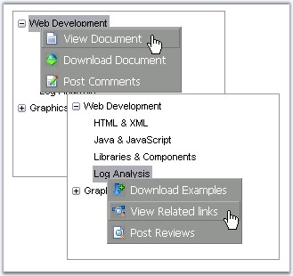

TreeView allows to display context menu for individual tree nodes or a control when you right-click on it. Different context menus can be displayed for individual nodes.
This topic will guide you to display different context menu for individual tree nodes as shown in the screenshot.

Figure 181: Different context menu for different nodes
1. Set ClientSideOnContextMenu property for the TreeView control to the script function to be called.
|
<cc1:Treeview id = "Treeview1" runat = "server" EditNode = "False" Width = "233px" Height = "300px" ExpandOnRowClick = "False" ClientSideOnContextMenu = "NodeOnContextMenu(this)"> <Items> <!--Add tree nodes--> </Items> </cc1:Treeview> |
Here NodeOnContextMenu(this) function is assigned to ClientSideOnContextMenu property, which specifies the client side function to call on right-clicking a node.
45. Add the required menu items to use as Context Menu and set the ContextMenu property as Custom.
|
<cc1:Menu id="Menu1" style = "Position: Absolute;" runat = "server" ContextMenu = "Custom" ClientObjectID = "Menu1" Layout = "Vertical" CustomCSS = "css/menu_std_design.css" >
<ItemLooks> <!--Apply the required style settings--> </ItemLooks> <Items> <!--Add menu items--> </Items>
</cc1:Menu>
<cc1:Menu id = "Menu2" style = "Position: Absolute;" runat = "server" ContextMenu = "Custom" ClientObjectID = "Menu2" Layout = "Vertical" CustomCSS = "css/menu_std_design.css" >
<ItemLooks> <!--Apply the required style settings--> </ItemLooks> <Items> <!--Add menu items--> </Items> </cc1:Menu> |
46. The below script function can be used to display the specific menu as a pop-up on clicking the respective node.
|
function NodeOnContextMenu( oItemData ) { var bShowMenu = false; var oEvent = oItemData.Event;
switch( oItemData.Text ) { case "Node1": Menu1.ShowContextMenu( null, null, oEvent, oItemData ); break;
case "Node2": Menu2.ShowContextMenu( null, null, oEvent, oItemData ); break;
default: bShowMenu = true; break; } return bShowMenu; } |
Here, ShowContextMenu() method is used to pop-up the menu that is called using the ClientObjectId.